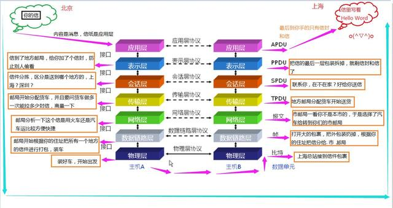

OSI七层模型介绍-尽我最大能力整理成通俗易懂，不妨试看一下
阳光男孩GW 2018-10-31 14:46:02
干货！没那么多时间废话，网上介绍OSI七层模型的很多，也很专业，但是看着像天书对不？不妨来看看我整理的这篇，也许有所收获，声明：我整理的也不见得全面，细节的地方还是得你去结合详细的信息去理解。开始！
OSI七层模型介绍
1、首先 osi 七层模型是什么？
OSI 是英文 Open System Interconnection 的简写，翻译成中文叫做 (开放系统互连参考模型)，他是一个国际标准化组织制定的一个用于计算机或通信系统间互联的标准体系
怎么理解呢？你可以这么想，在之前很早的时候，世界上有各种生产计算机硬件和网络设备的厂家，大家你做你的我做我的，弄的很乱而且还都互不兼容，这时候国际上有一个很牛很牛的公认的组织，为了统一互联网，让他不那么复杂，更加容易管理而制定了一个规则，而这个规则大家必须都要遵守，这个就是 OSI 七层模型。
2、那七层是什么意思？
首先，这个七层模型呢他是一个虚拟的，就是理论上的规则，并不是一个什么摸得到的物理形状的类似于汽车模型的那种模型，那它具体是什么样的呢？你看下图

【纯个人手打，替老师传道，不求多大成就但愿 能帮到大家，在闲暇的时间里为大家共享一些工作经验和各种技术资源文章，希望帮助大家共同进步 也希望我的发布对你有所帮助，我的发布里有更多类似的文章可以查阅，喜欢的请点关注，谢谢。你们的关注是我不停发布的最大动力】
3、那这两个七层模型到底是怎么回事呢？
首先，你要把这两边的七层模型看成是两个人在写信，你给人家写信人家是不是得给你回信？这个就是两个模型中间的箭头。意思是有来有回。而你们两个人的来回信件呢都得经过这七个步骤，然后才能到达各自的手中。这就是为什么两边都画了七层模型
4、OSI七层模型基本功能是什么?
OSI模型通过七个层次化结构的模型，使不同的系统不同的网络之间实现可靠的通讯，因此，其最主要的功能就是帮助不同类型主机之间实现数据传输
5、那这七个层到底都对应了哪些东西呢？
(1)物理层：它对应了，网卡、网线、光纤，等
(2)数据链路层：它对应了，网桥、交换机、等
(3)网络层：路由器、三层交换机
(4)传输层、会话层、表示层、应用层、这些个在软件层面上和虚拟层面上的，所以他不 对应相关的物理设备，这四个层面呢，它对应的是相关的协议了。
比如说：传输层有：TCP UDP 协议 ；应用层有 http ftp 协议等，就是这个意思
但实际网管需要日常维护的只有：物理层、数据链路层、网络层、应用层 这五层
6、那这七层在网络界都有什么作用呢？
1、物理层：设备之间比特流（01010100）的传输，定义物理接口和电气特性等
（1）定义物理接口：指明接口所用接线器的形状和尺寸引脚数目和排列、固定
和锁定装置等等，平时常见的各种规格的件标准等
怎么理解?
就是说，你是厂家要生产网线，那网线我们osi规定的里面是7股的两两相绕的双绞线，你就不能做成8股。
（2）电气特性：指明某条线上出现的某一种电平电压表示何种意义
怎么理解?
比如：你文字在文档中显示的是你看得懂的，但是在电线里能传输文字吗？显然是不行的，那怎么办呢？计算机把文字转成比特流，就是像这种的数字串
01010100 全部由 0 和 1 组成，且8位为一个比特。比特流就是极其庞大的这种数字组成的，这些数字，在电线上比方说 0 代表 1伏电压，0代表不带电。
2、数据链路层: 通过MAC地址转发数据帧，将数据封装成帧，进行错误检测与修正
每个电脑都有一个网卡，就是插网线的那个口，你知道吧，它有一个唯一的由数字和字母组成的一串文字，这个就叫做MAC地址，当物理层将比特流发过来之后呢，他就可以根据这个MAC地址找到你要发给的那个电脑是哪一台。当然这个是电脑跟你在一个局域网内的情况下。
3、网络层：转发不同网段之间的数据包，提供逻辑地址（IP地址），网络最优路径选择，数据从源端口到目的地端口的传输
这个怎么理解?
这个就是当你发送和接收的数据包，不再同一个局域网下的时候，就需要路由器来转发了，你说我不想这么走!不行，osi就是这么规定的。这个路由器就是帮你来回倒腾的中介
4、传输层：实行包的检测与丢包重传，提供可靠与不可靠的传输, 进行流量控制协商合适传输范围避免崩溃,实现网络不同主机上用户进程之间的数据通信
这个怎么理解？
就是说，当两个路由器之间进行收发数据时它得有个限度吧？你说我这个路由器一次性只能收发100个数据包，你给我发1000个数据包！那不炸了！咱俩商量一下怎么收发。这个就是自动协商。也就是传输层的基本意义
5、会话层：提供通信模式：单工，双工，全双工；将不同应用程序数据分离，建立客
户端与服务端，或不同主机上的用户之间的虚拟连接
(1)单工双全工：这个是之前老设备的区分了，现在一般都是全双工了
什么是单工和双工？他是一种传输模式
。单工：只能发不能收（类似于电台）
。双工：就是能发能收，但是不能同时进行（类似于对讲机）
。全双工：一边收着一边发着，同时进行（类似于打电话）
(2)什么是数据分离？
这个可以这样理解：当QQ和微信同时在收发消息时，总不能把微信的消息传给QQ把QQ的消息传给微信吧？那不是乱套了？这得把他俩的信息分开不是
6、表示层：对传输的数据进行基本的加密解密，对于相关的数据进行压缩，代码格式
化，数据格式转换等
这个怎么理解？
。 加密解密：你在网上给朋友传个密码比如说：123456 ，那这个不是直接就这么传出去的，要经过基本加密成比如：1d2dsa3sa4a5dzx6 类似于乱码的方式发过去，然后到他那头时会自动进行解密，变成 123456 ，当然，这个过程你是感觉不到的。
。压缩：比方说你传个大的图片，是不是很占网络资源？那么在传之前会自动进行压缩，然后到对方在自动解压缩，然后把图片展示出来，当然这个只是基本的压缩
7、应用层：数据用户接口，提供用户程序接口，应用层让应用程序能够将信息沿协议
栈向下传输。
应用层在最上面的一层，这个有两个意思：
(1)当作为发送端时：就是让应用程序能够将信息沿协议栈向下传输，就是你用QQ发个消息 之类的，首先是经过应用层的，然后再继续往下一层一层的传。
(2)作为接受端时：也就是QQ的另一头，他会把消息展现给用户，提供界面交互的这么一个 过程。
8、既然这些都讲完了，那么消息究竟是怎么传输的呢？和这七层之间的关系到底是怎样的呢？
我们通过这个生活中的案例来套一下这个模型，你来看一下。
案例：
假设你在北京，要给上海的朋友写一封信寄给他，那么你看这个信是怎么到他手的，那么网络上的消息也就是大概这么传的。

嗯，这个就是我理解的大概全过程了，欢迎评论区留言指教，共同进步，谢谢